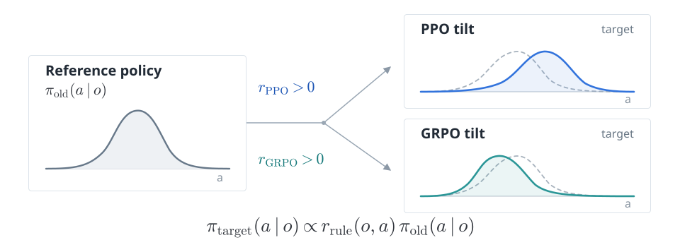
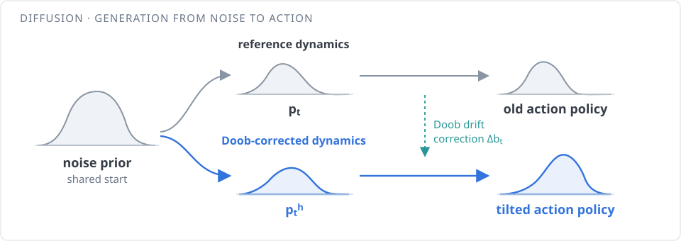
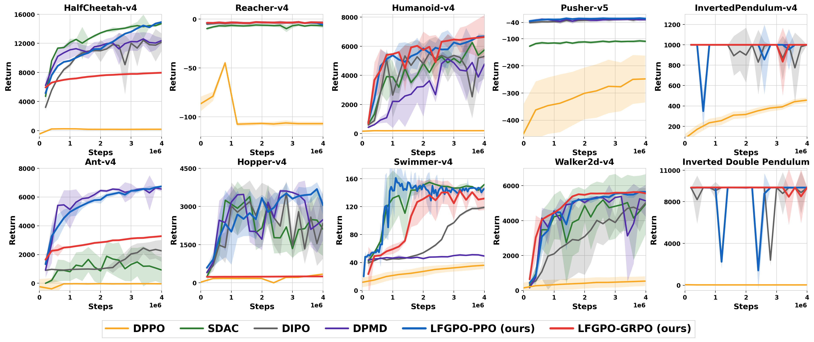
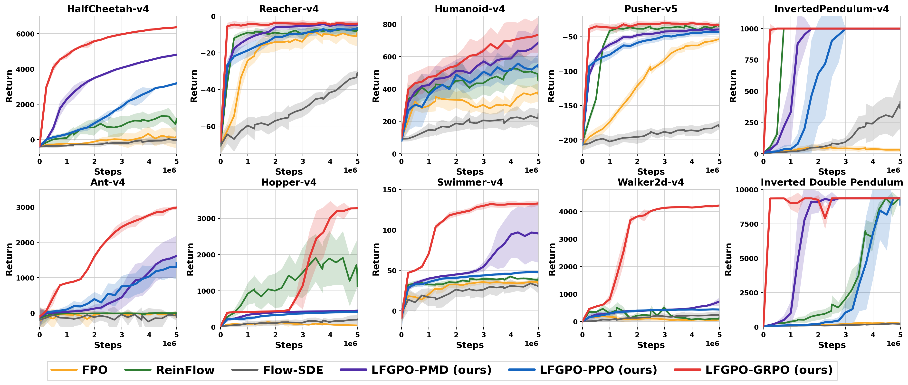

Diffusion and flow policies are expressive but generally lack tractable action likelihoods, limiting the direct use of PPO, GRPO, and related updates. We introduce Doob Policy Optimization (DoobPO), a unified framework that separates policy improvement from generative policy learning. An update rule specifies a ratio-tilted target distribution: analytic ratios are used directly, while PPO and GRPO learn a lightweight ratio model. Doob's h-transform characterizes the corresponding diffusion path, and a conditional drift matching objective trains diffusion or flow policies from behavior-policy samples. We prove gradient equivalence between the conditional and ideal objectives for both policy classes. For diffusion, the resulting Doob process is the minimum-control-energy modification that realizes the tilted endpoint under the paper's assumptions. DoobPO performs strongly on MuJoCo continuous-control benchmarks.
PPO and GRPO use the action ratio \(r_\theta(o,a)=\pi_\theta(a\mid o)/\pi_{\mathrm{old}}(a\mid o)\). A diffusion or flow policy generates an action through a trajectory, so its exact action likelihood is generally intractable. DoobPO separates the update rule from the generative model: first specify the desired change in the action distribution, then learn a generative process that realizes it.
Different RL updates express different preferences over actions. A KL-proximal policy mirror descent update has an analytic target ratio proportional to \(\exp(\widehat A(o,a)/\lambda)\). PPO and GRPO do not generally yield a closed-form target ratio, so DoobPO learns a lightweight positive ratio model \(r_\beta(o,a)\) with their respective RL objectives. A regularizer encourages \(\mathbb{E}_{a\sim\pi_{\mathrm{old}}(\cdot\mid o)}[r_\beta(o,a)]=1\). Both updates start from the same old policy; their learned ratios specify different target action distributions.

For PPO and GRPO, the positive ratio is learned with the chosen update objective; for PMD, it has an analytic form. Once the ratio is available, every rule follows the same distribution-level step: reweight the old policy and normalize. The negative log ratio is the endpoint energy that describes this tilt.
\[ \begin{aligned} \pi_{\mathrm{target}}(a\mid o) &=\frac{r(o,a)\,\pi_{\mathrm{old}}(a\mid o)}{Z(o)},\\ &\propto e^{-E(o,a)}\pi_{\mathrm{old}}(a\mid o),\\ E(o,a)&=-\log r(o,a). \end{aligned} \]
\(Z(o)=\mathbb E_{a\sim\pi_{\mathrm{old}}(\cdot\mid o)}[r(o,a)]\) normalizes the tilt; the update rule sets its action-dependent energy.
For diffusion policies, Doob's h-transform propagates the endpoint preference through the pretrained denoising process. The resulting process has the ratio-tilted action distribution as its endpoint (Lemma 3.1). The diffusion drift correction changes intermediate distributions during generation, reaching the chosen action law. For flow policies, terminal reweighting defines the corresponding tilted marginals, learned through weighted velocity matching.

The action-endpoint ratio induces an intermediate weight \(h_t\): its expected value conditioned on the current state of the reference diffusion. The spatial log gradient of this weight supplies the added drift shown in the diagram. The next step trains that drift without sampling the ideal corrected path.
\[ \begin{aligned} h_t(x,o)&=\mathbb{E}\!\left[r(o,X_0)\mid X_t=x,o\right],\\ \Delta b_t(x,o)&=-\sigma_t^2\nabla_x\log h_t(x,o). \end{aligned} \]
\(\Delta b_t\) is the extra diffusion drift. \(X_0\) is the action endpoint and \(X_T\) the noise endpoint in the paper's diffusion time convention.
The ideal tilted path is unavailable for direct training. DoobPO instead weights conditional score or velocity regression by the endpoint ratio, using samples from the old policy:
\[ \mathcal L_{\mathrm{CDM}}(\theta) =\mathbb E_{\mathrm{old}} \!\left[r(o,a)\,\|\psi_\theta-\psi_{\mathrm{cond}}\|_2^2\right]. \]
\(\psi_\theta=\psi_\theta(x_t,t,o)\); \(\psi_{\mathrm{cond}}=\psi_{\mathrm{cond}}(x_t,t,o,a)\) is a conditional score target for diffusion or a velocity target for flow.
At each fixed observation, the conditional objective's gradient is a positive multiple of the ideal drift-matching gradient for both diffusion and flow (Theorems 3.1 and 3.2). The implementation uses the Gaussian diffusion or affine flow regression targets described in the paper.
Among controlled reverse diffusions with the specified noise and action marginals, the Doob-transformed process minimizes quadratic control energy:
\[ \begin{aligned} \inf_u\quad &\frac{1}{2}\, \mathbb E_{Q^u}\!\int_0^T \|\sigma_t u_t(Y_t,o)\|_2^2\,\mathrm dt,\\ &Y_T\sim p_T^h,\quad Y_0\sim p_0^h. \end{aligned} \]
Proposition 3.1 is stated for each observation and assumes a realizable model class and an attained minimum. This optimal-control guarantee concerns diffusion; the flow result establishes gradient equivalence.
The generative policy can be diffusion or flow, while the update rule determines the tilt. Analytic ratios lead directly to weighted matching; PPO and GRPO use learned ratios. This view includes existing methods as special cases and yields DoobPPO, DoobGRPO, and DoobPMD.
| Method | Generative policy | Policy update | Ratio |
|---|---|---|---|
| DPMD | Diffusion | Policy mirror descent | Analytic |
| SDAC | Diffusion | Soft actor-critic | Analytic |
| DoobPMD (ours) | Flow | Policy mirror descent | Analytic |
| DoobPPO (ours) | Diffusion / Flow | PPO | Learned |
| DoobGRPO (ours) | Diffusion / Flow | GRPO | Learned |
We evaluate DoobPO on 10 OpenAI Gym MuJoCo continuous-control tasks covering locomotion, manipulation, and stabilization. Diffusion policies are trained from scratch for 4M environment steps and flow policies for 5M steps, with the same interaction budget for every method within a setting. All numbers are mean ± std over 3 random seeds.
DoobPPO obtains the best results on HalfCheetah, Humanoid, Ant, Hopper, Swimmer, and Walker2d, while DoobGRPO performs best on Reacher, Pusher, and Inverted2Pendulum. For example, DoobPPO improves over DIPO by 22.6% on HalfCheetah, 20.9% on Humanoid, 175.2% on Ant, and 12.2% on Walker2d.

Table 1. Diffusion policy performance (best in bold, second-best underlined).
| Method | HalfCheetah | Reacher | Humanoid | Pusher | InvertedPendulum | Ant | Hopper | Swimmer | Walker2d | Inverted2Pendulum |
|---|---|---|---|---|---|---|---|---|---|---|
| DIPO | 12169 ± 1172 | -3.09 ± 1.36 | 5523 ± 980 | -27.85 ± 2.08 | 1000 ± 0 | 2448 ± 361 | 3535 ± 456 | 119 ± 1.8 | 5028 ± 849 | 9351 ± 0.5 |
| DPPO | 248 ± 28 | -11.82 ± 1.28 | 195 ± 17 | -248.11 ± 86.32 | 456 ± 25 | -29.9 ± 1.7 | 338 ± 5.1 | 36 ± 5 | 535 ± 278 | 32.7 ± 3.8 |
| DPMD | 12612 ± 932 | -2.97 ± 1.34 | 5138 ± 191 | -28.22 ± 6.06 | 1000 ± 0 | 6358 ± 276 | 3608 ± 73 | 51.1 ± 1.4 | 5381 ± 26 | 9355 ± 3.7 |
| DACER | 11203 ± 246 | -3.31 ± 0.07 | 2755 ± 3599 | -30.82 ± 0.13 | 801 ± 446 | 4301 ± 524 | 3212 ± 86 | 103.0 ± 45.8 | 3194 ± 1822 | 6289 ± 3977 |
| SDAC | 14731 ± 166 | -5.83 ± 1.36 | 6173 ± 1592 | -108 ± 5.23 | 1000 ± 0 | 1880 ± 1025 | 3384 ± 303 | 154 ± 5.1 | 5181 ± 986 | 9353 ± 0.3 |
| DoobPPO (ours) | 14921 ± 39 | -2.96 ± 0.02 | 6679 ± 63 | -23.67 ± 3.16 | 1000 ± 0 | 6738 ± 53 | 3681 ± 269 | 161 ± 0.7 | 5642 ± 13 | 9356 ± 3 |
| DoobGRPO (ours) | 7800 ± 271 | -2.95 ± 1.35 | 6634 ± 1517 | -23.62 ± 4.35 | 1000 ± 0 | 3278 ± 40 | 251 ± 1.4 | 142 ± 2.4 | 5636 ± 10 | 9360 ± 0 |
DoobGRPO achieves the best result on 9 out of 10 tasks under the same 5M-step budget. It improves over the strongest baseline ReinFlow by 373.8% on HalfCheetah, 71.7% on Hopper, 213.7% on Swimmer, and 738.0% on Walker2d. DoobPMD is a strong second-best on several tasks, showing that the framework works across different policy-gradient methods.

Table 2. Flow policy performance (best in bold, second-best underlined).
| Method | HalfCheetah | Reacher | Humanoid | Pusher | InvertedPendulum | Ant | Hopper | Swimmer | Walker2d | Inverted2Pendulum |
|---|---|---|---|---|---|---|---|---|---|---|
| FPO | 327 ± 399 | -8.79 ± 3.20 | 390 ± 110 | -53.77 ± 3.69 | 52 ± 24 | -13 ± 13 | 137 ± 55 | 35.8 ± 2.51 | 186 ± 140 | 314 ± 84 |
| ReinFlow | 1344 ± 310 | -6.30 ± 2.83 | 525 ± 92 | -32.85 ± 3.81 | 1000 ± 0 | -5 ± 12 | 1911 ± 740 | 42.3 ± 1.77 | 503 ± 213 | 9358 ± 1 |
| Flow-SDE | 27 ± 219 | -31.08 ± 3.53 | 244 ± 60 | -178.42 ± 6.41 | 413 ± 238 | -45 ± 41 | 210 ± 100 | 33.9 ± 4.44 | 243 ± 128 | 268 ± 68 |
| DoobPMD (ours) | 4810 ± 53 | -4.35 ± 1.40 | 688 ± 123 | -39.10 ± 4.08 | 1000 ± 0 | 1614 ± 583 | 452 ± 4 | 96.9 ± 32.13 | 726 ± 144 | 9348 ± 0 |
| DoobPPO (ours) | 3190 ± 60 | -6.73 ± 2.16 | 556 ± 94 | -42.81 ± 3.75 | 1000 ± 0 | 1417 ± 203 | 423 ± 10 | 48.0 ± 1.30 | 440 ± 16 | 9350 ± 1 |
| DoobGRPO (ours) | 6368 ± 51 | -3.60 ± 1.37 | 735 ± 111 | -29.90 ± 3.74 | 1000 ± 0 | 2986 ± 56 | 3282 ± 7 | 132.7 ± 2.71 | 4215 ± 13 | 9350 ± 1 |
@inproceedings{su2026doobpo,
author = {Su, Maojiang and Zhu, Qijie and Xiao, Yu and Yu, Shuyang and Chen, Minshuo and Wang, Zhaoran and Liu, Han},
title = {Doob-Based Generative Policy Optimization},
booktitle = {Advances in Neural Information Processing Systems (NeurIPS)},
year = {2026},
}